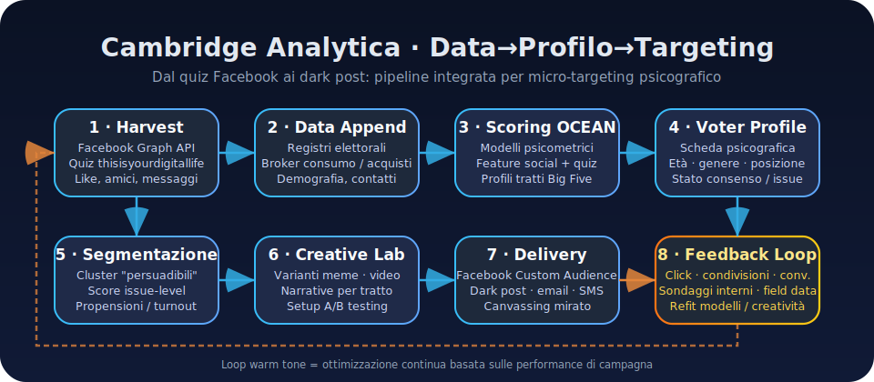

Psychometric Profiling, Micro-Targeting and AI Chatbots: User Data, Training and Governance
Abstract
The Cambridge Analytica (CA) affair revealed how psychometric profiling can transform social media data into powerful tools for political micro-targeting. Since 2014, CA collected Facebook data([1]) from tens of millions of people through a quiz ("thisisyourdigitallife"), obtaining OCEAN profiles([2]) (the "Big Five" personality traits) and matching them with demographic and consumer information. These psychometric profiles were used to segment the electorate and experiment with targeted political messages: e.g., by modulating pro-gun ads based on the "neuroticism" trait ([3]). CA propagated content on Facebook (via Custom Audiences and similar tools), testing ad variants with A/B testing techniques to maximize impact.
Okay, but what was the impact of all this?
Evidence on real effectiveness is mixed: CA itself, ([4]) reported increases of 39% in awareness on certain issues and a +30% in turnout for targeted groups in 2014 US campaigns. However, other independent analyses [5][6] noted that CA's predictive model did not significantly outperform normal demographic criteria.
Today, similar logics of intensive user data collection and utilization are found in major chatbot and LLM (large language model) services. Consumer platforms like ChatGPT (OpenAI, [7]) and Gemini (Google) by default record user prompts, conversations, and feedback and use them to continuously improve models[8]. Private users can "opt-out" (i.e., refuse to share their data) by limiting the sharing of storage and their dialogues, but in the absence of such a choice, chat data can be stored for extended periods (e.g., OpenAI keeps general user chats indefinitely to train models, unless opted out, while Anthropic from 2025 offers the choice: no training and 30-day retention or active training with 5-year retention[9]. Conversely, business/enterprise services offer isolation guarantees: for example, OpenAI API/Enterprise and Microsoft 365 Copilot ensure that inputs and outputs do not feed into the training data of public models[10][11], remaining confined within the client's environment. On the transparency and governance front, companies have introduced controls for users and administrators (such as privacy dashboards, retention settings, objection forms for the EU[12][13]) and adopted contractual commitments (e.g., SOC 2, DPA on data processing) to reassure businesses and regulatorsOpenAI [14]Google [15]. However, concerns remain: for example, the DeepSeek chatbot, a popular Chinese app, collects every input, file, and chat history, sending everything to servers in China[16][17]; this raises security doubts and has attracted the attention of experts due to potential risks of government access[18].
To access this article, a Wired premium account is required
In summary, from the Cambridge Analytica era to today's AI chatbot boom, users' personal and behavioral data have become the "fuel for predictive and generative models". While this enables more "intelligent" services and tailored campaigns, it also poses new challenges for privacy, control, and responsibility. Platforms are responding with greater transparency (dedicated policies) and control options, but it is also up to users, and especially regulators, to demand clarity on the use of their data, exercise opt-out/off rights, and carefully evaluate what to share with these AIs.
Cambridge Analytica: What Happened?
Now let's look in detail at what happened with the Cambridge Analytica case. To do this, I will use the first two sources we saw in the article 1,2
Data Collected
Cambridge Analytica (an affiliate of SCL Elections) acquired a massive dataset of Facebook users in 2014-2015 through the company GSR (Global Science Research) owned by researcher Aleksandr Kogan. Kogan developed a personality quiz app ("thisisyourdigitallife") leveraging Facebook's Graph API, which at the time allowed extracting not only the data of the consenting user but also those of their friends (friends permissions functionality valid until 2014). Approximately 320,000 Facebook users, mainly US-based, completed the OCEAN test by logging in via Facebook; in exchange for a few dollars, they gave the app permission to read a wide range of information: public profile (name, gender), date of birth, current city, "Liked" pages, wall posts, friend list, even private messages and tagged photos.
Because the app inherited the access rights of K
The Big Five personality model, known as OCEAN (Openness, Conscientiousness, Extroversion, Agreeableness, Neuroticism), was central to CA's profiling[2]. Kogan and colleagues applied the methodologies of the Cambridge Psychometrics Centre (known for the "MyPersonality" project), which demonstrated how Facebook Likes could predict OCEAN traits and other personal attributes with surprising accuracy[19][20].
In the contract stipulated with SCL on June 4, 2014, Kogan stated that his techniques allowed for predictability "close to test-retest" in personality scores, with correlations such that an algorithm based on likes was more accurate in describing a person than the knowledge of their friends or even family members[21][2].
This statement echoed a 2015 academic study [22], where Michal Kosinski, Kogan's colleague, showed that 70 Facebook likes surpassed friends in outlining an individual's psychological profile.
In practice, CA had estimated OCEAN scores for millions of US voters, obtained directly from the quiz or inferred through models trained on Kogan's data.
Since this might seem complicated now, let's take an example. A user with a high score in "Neuroticism" and low in "Openness" was identified as sensitive to messages of fear and order, while a highly "Extroverted" individual might respond better to optimistic and social content. Cambridge Analytica clustered the audience into psychographic groups and identified key themes for each segment: according to former CEO Alexander Nix, "presenting a fact supported by an emotion" was the strategy, adapting the argument to the audience's emotional profile[23].
Predictive Models and ML Employed
While not publishing technical details of its algorithms, CA combined machine learning approaches with traditional analytics. Kogan, in an email, explained that his model for CA operated similarly to Netflix's recommendation system, i.e., through SVD/factor analysis: reducing a user-like matrix to latent components, which incorporated personality, demographics, and social networks together. Essentially, the algorithm did not "openly" isolate the 5 traits but mixed them with dozens of other variables (age, gender, political orientation, etc.) into correlated factors useful for predicting electoral behavior.
As we did in the previous section, let's take an example. CA leveraged regressions and decision trees to estimate the probability that an individual would support certain causes or candidates, given their known psychographic and demographic characteristics.
CA's data scientists built models to identify the so-called persuadables, i.e., undecided voters strongly influenced by specific emotional triggers. The volume of data (likes, tests, online and offline behaviors) also allowed for the use of shallow neural networks or multivariate classification models to associate profiles with outcomes of interest (vote, donation, abstention). An important role was played by Facebook's look-alike models: CA could upload lists of known users (e.g., individuals with a high "openness" score identified by the quiz) and use Facebook's algorithm to find other similar users, expanding the targeting reach.
Data→Profile→Targeting Pipeline

Figure: the numbering follows the phases by which CA transforms social and commercial data into micro-targeted messages and continuously refines its models.
Firstly, CA (via GSR) extracts raw data from social media (Facebook) and combines it with other sources (e.g., public electoral rolls, data from commercial brokers such as purchases and subscriptions). This data feeds into psychometric analysis: individual OCEAN traits are calculated from the quiz and likes, which are then aggregated and integrated into a unique profile for each voter (including age, gender, location, political leanings, etc.). Based on this, CA's data analysts developed predictive models to segment the population into key groups (e.g., "insecure neurotics," "open progressives") and predict each group's susceptibility to specific messages.
In parallel, another team develops message variants (memes, videos, slogans) tailored to the psychological insights of the segments: for example, the same theme (such as gun sales) is packaged in a fear and protection version for individuals with high neuroticism, and in a sports hobby version for open/calm individuals.
Messages are then sent via micro-targeting: CA uploaded lists of target users (identified by name/ID, email, or phone) to Facebook and used tools like Custom Audience and Dark Posts to display different ads to different groups, without them being publicly visible to others. This phase included A/B tests and effectiveness checks: clicks, shares, viewing time, and conversion rates (e.g., event registration, donation) were monitored for each variant, then iterating on the winning creative. Finally, campaign results (actual engagement, changes in internal polls) were fed back into the process: user reactions served to further refine persuasion models, in a continuous optimization cycle.
Delivery Channels and A/B Experimentation
CA's primary message vehicle was Facebook. The company created targeted ads using Facebook's advertising system, which allowed ads to be directed to very specific demographic and psychographic clusters (by geographic area, interests, similar to a provided list). CA also leveraged its Canadian partner AggregateIQ for campaigns on other platforms and the display network (e.g., targeted web banners): AIQ managed advertising spending for pro-Brexit and pro-Trump groups, using data and segments provided by CA. Furthermore, CA did not disdain traditional methods: in some cases, it provided scripts for telemarketing or for political volunteers, calibrated to the profile of the voter to be contacted (e.g., emphasizing immigration when speaking with a "closed" and fearful individual, vs. economy with an "open" cosmopolitan).
A/B experiments were central: in practice, hundreds of ad variants were tested simultaneously, changing, for example, color, emotional tone, call-to-action, and measuring which version had the highest click-through or conversion rate in each segment.
A famous example reported by Wylie is the "Defeat Crooked Hillary" campaign, in which CA reportedly tested dozens of anti-Clinton messages (from the most moderate to the most conspiratorial) to understand which resonated with undecided voter groups, then bombarding them with the optimized message. At that time, Facebook did not effectively track these dark ads nor did it limit their extreme personalization, which allowed CA to conduct a kind of propaganda laboratory invisible to the public and the victims themselves.
Integration with external data
In addition to Facebook data, CA had a mosaic of other information. In the USA, it leveraged state voter rolls (containing voting history, party affiliation, etc.) and cross-referenced them with commercial datasets (from brokers like Acxiom, Experian) on purchasing habits, type of car owned, magazines read, charitable donations…
This hybrid strategy (social media + offline data) allowed for the identification of unprecedented correlations. An additional tool was Lookalike Audiences: starting from an audience whose orientation CA knew (e.g., people profiled as pro-Trump), Facebook's algorithm found other users with similar characteristics to extend the campaign to.
Outcomes and implications
In 2018, the Cambridge Analytica scandal, which emerged thanks to investigations (The Guardian, NY Times) and the action of the UK Parliament, led to the closure of CA/SCL and a symbolic fine for Facebook (£500k from the UK ICO) for failing to protect data.
The main legacy has been a global awakening to the risks of personal data misuse for the purpose of mass manipulation. The tools refined by CA (psychological profiling + social media targeting) were not entirely new in themselves, but CA pushed their use beyond ethical limits, operating without transparency or informed consent from data subjects.
The implications? Many!
The episode accelerated several reforms: Facebook further limited APIs in 2018-19 and made political ads more controllable, while in the regulatory sphere, cases like this contributed to the drafting of guidelines (e.g., GDPR in the EU already provided for the right to object to profiling and automated decisions since 2018, although it was not invoked at the time).
Do today's chatbots collect data?
The question naturally arises.
With the advent of ChatGPT and similar (2022+), tech companies have applied an analogous paradigm: collecting as many user interactions as possible to train and refine generative artificial intelligence models. In this second part, we analyze the policies of the main LLM providers (OpenAI, Google, Anthropic, Microsoft, Meta, DeepSeek), focusing on how they manage user data (types collected, purposes, retention periods, training, controls, legal basis) and what transparency and governance mechanisms they offer.
Chatbots and LLMs: data collected, uses, and platform comparison (2023-2025)
Conversational generative AI platforms have different business and user models (consumer vs. enterprise) but exhibit common trends: recording user requests (prompts), monitoring conversations (logs), and leveraging such data to improve models through "continuous training" (we will clarify this later).
Below, we present for each key vendor the current status (as of 2025) on data collection, use for training, retention, human review, offered controls, and legal basis, with a summary comparative overview.
OpenAI - ChatGPT
When we talk about OpenAI, we are obviously talking about GPT models and its flagship product and chatbot: ChatGPT.
Data collected
OpenAI collects every input provided by users to its models, both through the ChatGPT interface (chat conversations, uploaded attachments) and via API. In detail, chats on chat.openai.com include user prompts and AI responses; if the user provides files (e.g., when using plugins or through the image/PDF upload function), those contents are also acquired. Explicit feedback (👍/👎 votes on responses, reports) and technical metadata (timestamp, IP address, device/browser type) are also recorded for security and performance monitoring purposes.
OpenAI does not collect biometric or sensor data because the service is textual/visual/voice-based. Regarding the latter, using ChatGPT's voice function implies that user audio is transcribed and processed (using models like Whisper).
In addition to data directly provided by the user, OpenAI may collect usage telemetry (e.g., session frequency, prompt length, error rates) and applies cookies/tracking on the ChatGPT website as per its general Privacy Policy.
Purposes and legal basis
OpenAI does not use user data for marketing/personalized advertising purposes, a difference from classic social networks: prompts are not used to profile the user to sell ads, but rather to profile the model itself, so to speak.
From a GDPR perspective, OpenAI (after its dealings with the Italian Data Protection Authority in 2023) introduced an optional consent form for the use of data for training purposes but continues to rely on a combination of legal bases: the performance of a contract for response services, and legitimate interest for model improvement, while still offering data subjects the opt-out (right to object).
Use for model training purposes
By default, for consumer users (ChatGPT free and Plus), chat contents are used to train and improve OpenAI's models, unless explicitly opted out.
OpenAI explains that ChatGPT "improves by training on the conversations people have with it." This form of training includes both use in supervised fine-tuning/RLHF sets (e.g., OpenAI specialists review chat samples to create training data with human feedback, or use user 👍/👎 ratings as a reward signal in Reinforcement Learning) and direct use in datasets for future model versions. In March 2023, OpenAI changed its API policies, announcing that by default it would no longer use customer API call data to train models, unless opted in. This was to reassure companies and developers. Thus, for business/API services, the setting is the opposite: no use of user data for training, unless the organization voluntarily chooses to share it (e.g., by specifically sending prompt examples via Playground with an opt-in flag). In September 2023, OpenAI launched ChatGPT Enterprise, clarifying that all enterprise user conversations "will never be used to train our models" by default.
Data retention
OpenAI's retention policies distinguish by service and settings:
For ChatGPT conversations with active history (consumer default): data is stored in OpenAI's systems indefinitely, unless otherwise communicated. OpenAI does not explicitly state an expiration date – in fact, the goal is to accumulate a long history to train future models.
For ChatGPT conversations with history disabled (opt-out training): OpenAI states that such data "will not be used to train models" and will be retained for only 30 days for abuse monitoring purposes, after which they will be deleted. This ~30-day window serves to potentially inspect content if problems arise (e.g., a user generating many illegal requests).
For standard API usage: similarly, request and response logs are kept for a maximum of 30 days for security/abuse reasons, after which they are deleted. This was a change introduced in late March 2023: previously, API data could be retained longer. Furthermore, OpenAI offers enterprise customers a "Zero Data Retention" option, meaning that the contents of requests are not retained at all (if the customer opts for this mode, requests are processed and immediately discarded, retaining only aggregated metrics).
For ChatGPT Enterprise: OpenAI provides administrators with control over the retention period of their enterprise users' conversations (up to choosing zero retention). The Enterprise documentation (updated June 2025) states: "You control how long your data is retained (ChatGPT Enterprise)". This implies that a company can set, for example, auto-deletion of chats after X days. If not otherwise configured, enterprise data should follow the default contractual retention, which is 30 days for API endpoints and potentially longer for the enterprise interface if the user allows it (but always excluded from training).
Legal exceptions: As with everyone, any data subject to legal obligations (e.g., preservation order from authorities, or data necessary for legal disputes) may be retained beyond the terms above.
In summary, the common ChatGPT user who does not touch the settings accepts indefinite retention for training purposes. The aware user can reduce the impact by disabling history (reducing retention to 30 days and no training). Companies and developers, on the other hand, have by design short retention and no training, with the option to further tighten to zero logs.
Human Review of Data
OpenAI employs manual review on a small percentage of conversations, both to improve the model (e.g., labeling difficult conversations to teach better responses) and for moderation (analysts checking if the model has violated policies). The documentation explains that OpenAI staff can access and view a sample of user content, with tools to obfuscate personal information where possible.
Data intended for training is pseudonymized: OpenAI states that it removes or aggregates as much personal information as possible before using the data in training datasets, to reduce the risk of identity reconstruction. For example, names, emails, numbers might be automatically masked. However, this is not an absolute guarantee of anonymity, as various bodies have noted (the Italian Garante has asked for better implementation of these measures). OpenAI's human review also occurs for feedback: if a user reports an output as inappropriate, a member of the security team may read that entire conversation.
Important: for API/enterprise users, OpenAI states that it does not involve humans in the requests contained, unless the client itself shares them via feedback. Thus, corporate data remains confidential (also because it often contains trade secrets); in ChatGPT Enterprise, conversation logs are not visible to OpenAI personnel nor used for training, except in exceptional abuse situations.
Gemini - Google
Data Collected
Google collects a wide spectrum of data through its conversational AI services, which in 2023 evolved from Google Bard to a unified suite under the name Gemini. The Google Gemini Privacy Hub details the categories:
User-provided content: everything the user says or enters in interaction with the AI. This includes the textual or voice prompt, any uploaded files (images, documents for model analysis), data shared via "connected apps" functions (e.g., if the user asks Gemini to read a web page or an email, the content of that page/email is acquired). If the user uses the AI in vocal/video mode (e.g., Gemini Live), the transcriptions and audio/video recordings of that interaction are collected.
AI-generated content: Google also records the generated responses from the model (text, code, created images, audio, video). So the entire conversation (prompt + output) is stored. Even chat summaries or public links created with Gemini are considered generated content and tracked.
App and device data: every interaction with Gemini is accompanied by telemetry data. Google collects information about connected apps and integrated Google services (e.g., if the user has activated the willingness to use data from YouTube, the system records which services were consulted). It then collects device details (model, OS, app version), browser and local settings, as well as unique identifiers and the IP address. Furthermore, interaction metrics are logged: response times, any crashes.
Permissions and device context (mobile): if the user uses the Gemini mobile app (or Google app with assistant), Google may collect supplementary data: the address book/contacts (if "help you keep in touch" functionality is active), call and message logs (to respond to prompts like "when did X call me?"), list of installed apps, screen content (if "overlay" is enabled to ask questions about the current screen). These are potentially very sensitive information, managed with Android/iOS permissions, but if granted, they become input to the model and are treated as collected user data.
Approximate location information: Google detects an estimated location (based on IP or account geolocation) to contextualize responses and to record where the activity originates (e.g., to apply regional policies).
Explicit feedback and Gems: when the user provides feedback or defines custom instructions (Gemini's "Custom instructions") or Gems (user-saved agents), this data is stored.
Supplementary data from opt-in features: if the user opts for certain experimental features (e.g., sharing conversations publicly via link, or using "Canvas" to create visual apps with AI), Google might collect additional specific data (e.g., the content generated on a Canvas app).
In practice, everything that passes through Google's AI is logged: prompts, outputs, connected interactions (searches performed by the AI on behalf of the user), application context. Google can also cross-reference this information with the user's history on other services: the Privacy Hub mentions the use of data from Search or YouTube history as context that Gemini can take if the user allows it.
Purposes of Use:
Google applies its general Privacy Policy to Gemini as well, enumerating various purposes:
- Service delivery: using data to provide requested functionalities (e.g., generating a response, remembering user preferences in chats).
- Maintenance and improvement: using collected data to train and refine AI models, improve response quality and robustness. User prompts and chats serve to train the models (part of "maintain and improve service").
- Development of new services: data used in aggregated form to create future functionalities, prototypes.
- Service personalization: if the user has opted for personalization, prompts can influence future suggestions (e.g., if I often ask Gemini for recipes, it might personalize Google Search results towards recipes).
- Communications with the user: e.g., sending alerts about new features.
- Performance measurement: understanding metrics of response success, usage (this falls under analytics).
- Protection of Google, users, and the public: means using data for moderation, preventing abuse, removing illicit content, complying with regulations (e.g., filters on hate speech).
The Privacy Hub emphasizes that human reviewers review part of the data "for these purposes".
Use for Model Training and Improvement
This point is the core of everything, so I ask you to pay attention.
By default, Google uses user data from generative interactions to train and refine its AI models.
Like OpenAI, Google can also use collected data to train filter models (e.g., recognition of prohibited requests) or to improve the integrity of its models.
Google states that it creates anonymized datasets for these purposes. According to an independent analysis, chat data that Google selects for training is stored for up to 3 years along with metadata (language, device) but disconnected from the user account. In practice, Google samples conversations, removes direct identifiers, and archives them in a training corpus on which they fine-tune the generative model (Gemini and related). In conclusion, unless you opt-out, if we ask Gemini "Recommend a children's movie," that chat, appropriately anonymized, could help the model respond better to similar requests in the future.
Consumer vs. Enterprise Differences
For consumer users (personal Google accounts), data usage for training is opt-out (i.e., active unless deactivated), while for Google Workspace customers (business/school) Google has made the opposite commitment: no customer data will be used to train generative models outside of their domain. A document on AI in Workspace states: "Gemini does not share your content outside your organization without your permission.".
This means that if a company uses AI features (e.g., "Help me write" in Gmail with Gemini), the prompts and generated texts remain within the tenant and Google does not use them to improve the base model intended for the public.
This mirrors Microsoft's approach with Copilot (no cross-tenant training). Thus, Google distinguishes two flows:
- Consumer scope: data used for training general models (Gemini), unless opted out.
- Enterprise scope: data isolated, no global training. (Google might offer opt-in options for companies that want to contribute in the future, but as of today, this is not the case).
Human Review and Security
Google specifies that human personnel (including personnel from contracted third-party vendors) review a portion of the collected data for the listed purposes.
In particular, teams of analysts/annotators check extracted conversations to evaluate response quality, identify model errors or biases, and flag problematic content. Before Bard's public launch, for example, Google had its raters review output samples.
Now, on an ongoing basis, there is a pipeline: certain chats (e.g., long conversations or those with user thumbs down) are sent to a labeling tool where reviewers read them and mark attributes (such as "contains misinformation," "helpful response?" etc.).
Google states: "please do not enter confidential information that you would not want a human reviewer to see or that Google uses to improve our services." This is a very direct warning: it means that anything we write could be read by staff. This very sentence appears in the Bard and Gemini disclaimers. For enterprise data, however, Google promises: "your content is not subject to human review outside your organization without permission." That is, Google will not have employees read Workspace user prompts, unless the company itself shares them (or perhaps in aggregated form for debugging, but not systematically).
User Controls and Settings
The question may spontaneously arise: what can we do to preserve our privacy? Let's now see how we can modify the various settings.
Google provides various controls, but the most important is the following:
In your Google Account > Data & Privacy section, there is an item "Gemini Apps Activity" where the user can view and eventually delete the history of questions asked to the AI, set auto-deletion after 3, 18, or 36 months, and choose whether to allow data usage to improve Google AI (since this information might change, I'll leave the link here).
This last option is crucial: if deactivated, prompts are not used for training (in theory at least).
Let me explain better. As specified, deactivating activity prevents its use for model improvement and review, but Google warns that your prompts may still be used to respond to you and to keep Gemini safe and secure, including with help from human reviewers. There is a subtle distinction: Gemini Apps Activity off blocks use for training models (data does not enter the anonymous dataset), but Google may still have them checked for moderation and keep them for 72 hours. So a user cannot totally prevent their content from being read by humans, as moderation falls under legitimate interest/security (unless they don't use the service at all).
Furthermore, it is important to say a few words about the objection form (EU): for public data used in pretraining, Google (like Meta and OpenAI) offers GDPR forms to object to the use of personal data present in web scraping. This is not directly related to user prompts, but part of overall governance.
I think we can move on to the next major provider, Anthropic.
Claude - Anthropic
Data Collected
Claude is accessible via API and through a chat interface (claude.ai) in Free, Pro, and Max versions. User data collected includes: prompts entered (text and any attachments; e.g., code sent for analysis), the entire conversation (cumulative dialogue), usage metadata (times, IP address, browser info), and any explicit feedback submitted (reactions, reports). Anthropic's Privacy Policy (updated September 5, 2023) defines "chat and coding session data" as the content they can use to improve models.
It also collects account data (email, phone for 2FA) and payment data if the user is Pro/Max. There are no reported integration features with external apps for now, so the data is primarily that provided by the user in the chat itself. Technically, Anthropic also retains API request logs similar to OpenAI, with IDs and timestamps.
Declared Purposes
Anthropic, as per its Privacy Policy, uses user data to: provide the service (generate responses with Claude), improve and train its AI models, prevent abuse and security issues (moderation), communicate with users (support, policy notices), and comply with legal obligations.
In the EU, its privacy center states that the legal basis for normal consumer users is consent to use data in training (consent it will explicitly request from 2025), while for commercial customers the basis is contractual and data is not used beyond service execution. Anthropic does not advertise, so it does not use data for marketing purposes.
Use for Model Training - Policy Evolution
I want to say a few words about the evolution of the policy because I think it's noteworthy. Let's see why together.
Initially, Anthropic was among the most careful: until 2023, it declared that it did not use user conversations to train its base models.
This scenario changed in late 2023-2024: with the need to improve Claude and compete, Anthropic revised its policy.
Until mid-2023: for Claude users (e.g., on Poe or Slack), data was not used for training by default; however, it was retained for moderation for 30 days. The user could consent to share conversations for research, but it was opt-in.
However, in late August 2025, Anthropic decided to make a change. I remember very well a recent Wired article that celebrated Claude by saying that "Claude had been one of the few major chatbots to not automatically train on user chats." Later in the same article, they explained how to revert to previous settings and how to opt-out.
The policy was expected to come into effect on 9/28/23 but then they postponed it to October 8, 2025 to give users more time to choose.
The default has effectively become opt-in for training (the in-app toggle is pre-selected to ON), so if the user accepts the new terms without touching it, they are included. Those who refuse (opt-out) will be able to continue using Claude but with their data excluded from training.
Starting October 2025: all new conversations from consenting consumer users will be used to train new versions of Claude[104]. Those from users who denied consent, no.
Important: Anthropic specifies that only new or resumed chats after opting in count. Old, pre-existing chats will not be used retroactively unless the user reopens them (by reopening them, they become "active" and thus "eligible" for training from that point onwards). Therefore, there is a focus on fresh data.
For business clients (Claude for Work, Claude Pro for organizations, API, cloud partners), Anthropic does not use data for training unless specific agreements are in place. It reiterates: "these changes do not apply to services under Commercial Terms, including Claude for Work (Team and Enterprise), API, Amazon Bedrock, Google Vertex, Claude Gov/Ed". In other words, like OpenAI and Google, Anthropic also respects the isolation of business clients.
Retention Period: Until 2023, Anthropic stated that it deleted conversation data within 90 days or a maximum of 1 year in logs, retaining 30 days for active moderation. But in 2025 with the new policy, there is a big change:
- If the user consents to use for training, Anthropic extends conversation retention to 5 years[12]. The idea is that having a long history helps the model development cycle (Anthropic states that training cycles last 1-2 years and consistency in collected data is needed[108]). Thus, chats and code from opt-in users may remain in the systems until 2030!
- If the user does not consent (opt-out), the previous short retention remains: chat data will be stored for only 30 days (for security/abuse reasons) and then deleted[109][13].
- In both cases, the user always has the option to manually delete individual conversations from the Claude.ai UI; if they do so, Anthropic guarantees that those conversations will not be used in future training[[
Enterprise Retention and Controls
This is one of the points that has allowed Copilot to be one of the most chosen in the Italian corporate landscape. Let's see why now:
Service Boundary and Data Residency: Microsoft 365 Copilot is integrated into the M365 ecosystem, so the data processed falls within Enterprise Trust. Copilot resides on Azure infrastructure in the chosen region: for EU customers, it is declared compliant with the EU Data Boundary, preferably processing prompts in EU datacenters (except for fallback needs to other regions, still with guarantees). In March 2024, Microsoft added Copilot among the services covered by data residency and Multi-Geo commitments. Therefore, a company can be sure that its prompts and responses remain within that geographical scope as per contract.
Historical Retention and Deletion: Copilot Chat prompts and responses are not stored long-term by the app: however, they are recorded in "Copilot activity history" available to the user, and also exportable via Content Search and Teams Export API. If a company wishes, it can configure retention policies on this data with Microsoft Purview, for example, to delete interactions after X days or retain them for eDiscovery. The user themselves has control: they can go to the Microsoft account portal and delete their Copilot history ("Delete your Copilot activity history" feature). Microsoft stores interaction logs as part of Exchange Online mailboxes (it seems to equate them to other user data). In the absence of custom policies, such data could be retained indefinitely as part of the account, but presumably subject to the same retention rules as other files (e.g., if the company has a 5-year default on mailboxes, the same rules might apply).
Administrator Controls: Microsoft 365 admin can enable/disable Copilot for the organization or for specific users via licenses. They can manage the settings on what Copilot can access. The tenant admin can control the submission of feedback to Microsoft: there is a centralizable "Allow Recommender System Feedback" policy (as mentioned, Microsoft allows user feedback and potentially uses it in aggregate for improvement). The admin can deactivate this "telemetry" if they prefer no sharing.
Content Moderation: Microsoft states that it has integrated filters to block inappropriate output (using OpenAI filters and Microsoft's own rules). If a user attempts to generate, for example, an offensive scenario, Copilot will refuse.
Transparency for End Users: every Copilot response provides citations with links to the internal sources used (documents or emails), so the user knows where the data comes from. This is part of governance (to avoid uncontrolled "hallucinations").
In conclusion, Microsoft adopts a walled garden approach for Copilot data: prompts remain with the customer, they do not become part of a public model.
Obviously, Microsoft might use anonymous metadata (like "30% of users ask for meeting summaries"), but not the specific content. This has been reiterated in public responses: for example, when a rumor circulated about a "Copilot setting: use my data to train," Microsoft clarified that it was a misunderstanding, confirming no training on customer data.
Meta - Llama
Data Collected:
Meta (which is nothing more than the group that includes Facebook, Instagram, and WhatsApp) entered generative AI with various products in 2023: open-source models (Llama 2) and especially Meta AI assistant integrated into Messenger, Instagram, WhatsApp, and Ray-Ban glasses.
Meta is also building multimodal models ("Emu" for images). Meta AI's data management has two components:
- the initial training data for the models, much of which comes from the web (including Meta platforms)
- the data generated from chatbot use.
For the first point, Meta has announced that it will start using public content from Facebook and Instagram (posts, comments visible to everyone) to train its LLMs. In the USA, it has been doing this "silently" for years, in the EU, thanks to GDPR, it had paused in 2024, but from April 2025, it started with notifications to users.
Meta says it will not use private message data (Messenger, WhatsApp, IG DMs) or users' non-public content to train models. Furthermore, it excludes data of minors (<18) in the EU even if public.
I hope the message is clear: if I write a public post, it might end up in Llama's training dataset; if I write a private message to a friend, Meta claims not to use it in the dataset.
For the second point, when chatting with Meta AI on Messenger/IG, the data collected includes: user input (chat message, photo sent to the bot), the generated response from the assistant, and any interactions (feedback, if the user likes the bot's message, etc.). Meta has warned in-app: "Your interactions with Meta AI may be used to train and improve AI models" (in-app notification). So presumably, unless opted out, the messages we write to the bot and the responses are logged and used by the AI team to calibrate the models.
I recommend trying this chatbot on WhatsApp, Instagram, and Messenger at least once, even if only to read these warnings I just mentioned.
I think we have discussed the use of training data extensively, and I will move on.
Retention and Protection
Meta has not provided precise retention times for user prompts/responses with AI. Being integrated into Messenger/IG, those chats with AI could be treated as normal messages (retained until the user deletes them, and in any case saved on servers as long as the account is active). Meta tends to retain data as long as it is useful, unless a deletion request is made. Conversations with bots may be subject to moderation (Meta filters content according to policies).
All other data, such as posts on the various Meta group social networks, remain stored as long as they remain on that platform.
Human Review
Knowing how Meta is concerned with managing certain content on its social networks, I think Meta similarly employs human testers. The privacy risk is that if someone confides secrets to the bot, annotators might read them. Meta has avoided encouraging this; in fact, it has put that clear warning "do not enter confidential information" when using Meta AI (similar to Google and OpenAI). It is probable that Meta has a review program like the others: a percentage of chats with the bot are analyzed to understand errors and used for RLHF.
However, I have not found many accurate sources regarding this.
User Controls
As in the other chapters, let's now talk about what the user can do for their privacy
EU Notifications and Opt-out Form: as mentioned, every EU user last year received a notification on FB/IG with an explanation and a link to a form to object. The form on the help center asks to confirm the account and preferences (it distinguishes: do you want to object to the use of posts, or images, etc.). Meta states that those who submit the objection will be excluded "at any time" (there is no deadline).
Privacy Center: Meta does not offer a one-click toggle (being based on LI legal basis, it requires the user to declare an objection).
Data Deletion: the user can delete their posts from the social network, thus preventing that use. Conversations with the bot can be deleted like normal chats. But if already used in training, they remain in the model (not retroactive).
Controls for Minors: by default, under 18s are excluded, so no action is needed.
Transparency and Audit: Meta publishes AI system cards for its models. Llama4 but no information on training data is provided.
DeepSeek: the first Made in China chatbot
DeepSeek is a Chinese company with a chatbot of the same name. This company was founded in 2023, available via web and mobile.
It has GPT-like models and search functions. On the data front, I want to say a few words about DeepSeek because it's a notable case in that it collects almost everything it can from users. Let's look in detail:
Account Data: email, phone, username, password (to create an account).
User Input (prompts and files): any text or audio entered into the chat is collected and stored. This includes entire conversations, uploaded files, and input images. The Privacy Policy explicitly states: "we may collect your text or audio input, prompt, uploaded files, feedback, chat history". In short, the entire chat history and attachments are on their servers.
Generated Outputs: the bot's responses ("Outputs") can also be retained (they often include reprocessed user info, thus considered part of user data).
Device and Network Data: the app collects device model, OS, IP address, language, device identifier, system logs, crash and performance data. It also monitors in-app actions (which functions you use, how many queries you make). It uses cookies and similar technologies to track usage (on web and mobile). A Wired article discovered that it also loads Chinese tracking libraries (Baidu Tongji analytics) and sends basic data to ByteDance.
Tacit Input Data: a disturbing aspect, DeepSeek can collect "keystroke patterns or rhythms", i.e., typing dynamics, and other behavioral parameters (perhaps for fingerprinting).
Third-Party Data: if you log in with Google/Apple, it collects basic profile data. Furthermore, it states that it may receive data from advertising and cookie IDs to link activities outside the service.
In practice, DeepSeek collects not only the contents of communications but also a complete technical picture of the user and how they interact.
Purposes of Use
Okay, but why all this information?
The Privacy Policy lists:
Provide and maintain the service (e.g., store chat for conversational continuity)
Train and improve models: explicitly, "to train and improve our technology, e.g. our ML models", including monitoring interactions and analyzing how people use the service. This passage clearly indicates that DeepSeek uses user prompts as training data to enhance its AI.
Communications with the user (service emails, etc.).
Legal Compliance: they will provide data to authorities if requested and if necessary to protect someone's health/life. The latter is standard, but in the Chinese context, it means that data can be shared with local law enforcement if deemed appropriate.
The legal basis varies: for EU users, as per their table, they use contractual performance for basic data, legitimate interests for service improvement and security, consent for things like cookies and any requests (including account creation if a minor aged 14-18). However, being in China, GDPR compliance is effectively theoretical (they do not yet have an EU representative).
Use for Model Training
Here we have the opposite case of Copilot, and I can answer quickly. Yes, by default and without opt-out.
Everything you type can be used to train DeepSeek or similar models. There is no indication of exclusion other than to stop using it.
Furthermore, there are no business plans with exclusion: it is a consumer product (even if they sell APIs, they don't mention excluding them from training). So it's presumable that any prompt sent goes into a central dataset.
Retention and Storage
DeepSeek states that it retains data as long as necessary to provide the service and for other purposes. Furthermore, it keeps them for legal obligations and legitimate interests (development and legal defense). It does not provide a fixed time (e.g., X years); it depends on the type: it says as long as you have an account, we maintain account info and input.
Therefore, by owning an account, presumably the entire chat history is kept indefinitely on their cloud (unless you manually delete it).
A critical question is where this data goes: DeepSeek openly informs that "we store the information we collect in secure servers located in the People's Republic of China". This means that all prompts, files, chats, etc., end up on servers in China subject to Chinese laws. This implies that, according to Chinese cybersecurity and intelligence law (e.g., National Intelligence Law 2017), authorities can request access to that data for national security reasons. Thus, a US/EU user who might think they have confidentiality, in reality, their data can be seen by the Chinese government if necessary (and the user will not know).
Human Review:
I think everyone knows that this chatbot doesn't respond to anything when asked what happened in Tiananmen Square. If not, I recommend you look into it.
This implies that user prompts pass through a filtering and potentially reporting system. Being a Chinese company, if a user writes prohibited content, that information could be isolated and transmitted to the relevant authorities (not confirmed, but plausible). Regarding model improvement: DeepSeek's technicians will certainly examine user conversations en masse to refine the AI. There is no mention of PII obfuscation, and perhaps the data sent to China includes everything, in which case reviewers might see names or private data.
User Controls
One last time, we ask the famous question: so what can we do?
Chat Deletion: the app allows you to delete chat history (on the interface, there's "Delete all chats" in settings). If one uses that option, I imagine they remove chat visibility from the account and the primary database. The doubt remains whether they keep it in backup. However, the user at least has that option for their console. Wired documented it step-by-step (I won't link the site again).
Account Deletion: you must write to them (privacy@deepseek.com) to request data deletion, according to the policy.
Opt-out Training: not explicitly provided. The policy contains a sentence: "If you refuse to allow us to process data as described above, you must send a request via email"[172]. So the only way is to write and plead not to use your data.
Conclusion
Many experts advise not to enter personal or sensitive information into that app (which is valid for all AIs, but even more so here).
Services like Proton and ExpressVPN have published warnings highlighting the points: intense tracking, sharing with ByteDance and Baidu, etc.
So, while it was cool to use their reasoning models at first, today, until they fix these privacy issues, it would be better to think carefully before using it.
Synthetic Comparison of Main LLM Platforms
Let's start drawing conclusions. For an overview, the following table compares the various chatbot/LLM providers against some key data management parameters:
Table 1: Comparison of LLM provider data practices and privacy options (updated 2025). Sources: Official policies and documentation of the respective services we mentioned above
| Vendor (Product) | Scope | User data used for training (default) | Opt‑out/Opt‑in | User data retention | Human review | Controls and safeguards | Policy update |
|---|---|---|---|---|---|---|---|
| OpenAI (ChatGPT) | Consumer (Web/App) | Yes (conversations & feedback) | Opt‑out available (history off) | Indefinite if history on; 30 days if off | Yes, on samples (pseudonymized) | Toggle "Do not train", Privacy Portal for objection, Ephemeral chat | Apr 2023 (Italy DPA), Jun 2025 (Enterprise) |
| OpenAI (API / Enterprise) | Business/Dev | No (by default) | Optional opt‑in (feedback) | Log 30 days (standard); zero log option | No (opt‑out human monitoring) | Data encryption, SOC2; admin controls retention | Mar 2023 (no-train API); Aug 2023 (ChatGPT Ent.) |
| Google (Gemini/Bard) | Consumer (Google Account) | Yes (prompts & conv.) | Opt‑out available (disable "Gemini Activity") | 18 months default (3-36 months configurable); ~72h if off | Yes, limited (0.2% conv.) | Toggle in MyActivity (EU: right to object); delete chat history | Jul 2023 (Bard EU); Nov 2025 (Privacy Hub Workspace) |
| Google (Workspace AI) | Business (Gsuite) | No (remains in the domain) | N/A (opt‑in required if share) | Session only (no prompt retention); optional conv. savable 3-36 months | No (no external review) | Admin: enable/disable AI; data within EU boundary | Nov 2023 (Workspace Hub) |
| Anthropic (Claude) | Consumer (Free/Pro) | From Q4 2025: Yes (if user consents) | Opt‑out possible (toggle "no training"); default = opt‑in (toggle on) | 5 years if training on; 30 days if off | Yes (on opt-in data) | Privacy Settings for training choice; delete chat; no EU app yet | Oct 2025 (new Terms) |
| Anthropic (Claude Ent/API) | Business/API | No (never used for training) | N/A (excluded by default) | 30 days log (for abuse) | No | Contract: isolated data; private cloud self-host option | Jul 2023 (Claude 2) |
| Microsoft (365 Copilot) | Enterprise (M365) | No | N/A (no external training) | Retained as standard M365 data; controllable via retention policy | No (opt‑out from monit.) | DPA and Product Terms (no data use); EU Data Boundary; user delete history | Mar 2024 (Prod. Terms, EU boundary) |
| Meta (AI Assistant) | Consumer (Facebook, IG) | Yes (public posts/comments; AI chat) | Opt‑out form (EU) - right to object | N/A (similar to other FB messages); posts as long as online | Yes (for moderation & RLHF) | In-app notifications; "Generative AI" EU form; promises: no private data | Apr 2025 (EU roll-out AI) |
| Meta (business data) | Enterprise (Workplace) | No (excluded from training) | N/A | Internal rules (isolated customer data) | No | Meta DPA, sub-processors list | - |
| DeepSeek | Consumer (Global) | Yes (all prompts/chats) | No opt-out (implicit consent) | As long as account active (no defined expiry) | Yes (staff access + possible Chinese authorities) | Manual chat deletion; no guarantees on transfers (-> China) | Feb 2025 (PIPL policy) |
Legend:
- "Scope" distinguishes whether the service is consumer or business;
- TrainingUseDefault indicates whether user data feeds the model's training by default;
- Opt-out/in indicates whether the user can object or must consent;
- Retention is the typical period for retaining user content;
- HumanReview if routine manual review occurs;
- Controls highlights the data control tools provided;
- Policy update gives the last significant update)
Observations from the table
OpenAI, Google, and Meta in the consumer context adopt a similar approach: default inclusion of user data in the AI improvement cycle, mitigated by a more or less hidden opt-out option (OpenAI with a UI toggle, Google in the account, Meta via form). In contrast, services aimed at businesses (OpenAI Enterprise/API, Google Workspace, MS Copilot) are set up not to reuse customer data for training, to reassure on privacy and compliance: these effectively treat data as a private cloud for the company.
Anthropic's case stands out for a recent change: from full opt-out, they moved to a system of mandatory consent (the user must choose, with a default towards training), which has aligned it with OpenAI/Google (in practical terms, many users will leave it active and data will be used).
On the retention front, we see variability: from very short logs (30 days) for OpenAI APIs and ChatGPT with history off, to long periods like 5 years if the user consents (Anthropic) or indefinite (OpenAI with history on). Google provides granular control but basically keeps data for 18 months. Microsoft and Workspace maintain data aligned with normal enterprise retention policies (thus potentially for many years if the company archives them).
For human review, all consumer services (except DeepSeek, which is a separate case) indicate some degree of human intervention on user data, generally limited and pseudonymized. Microsoft and Workspace state they do not perform any for customer data. Regarding transparency and controls, Microsoft appears the most restrictive/protective, followed by OpenAI enterprise; Google and OpenAI consumer provide toggles but require user awareness; Meta offers an opt-out form in the EU but lacks a simple switch in settings (which could reduce objections due to friction). DeepSeek, finally, represents a worst-case: the user has virtually no say, and data ends up in a context of lesser legal protection.
Transparency, governance, and protections: current trends
Let's proceed step by step, starting with understanding the controls for the end-user.
Controls for the end-user
In response to growing concerns, generative AI providers have introduced tools that allow users to partially manage their data. For example, almost all now offer a way to disable history retention (ChatGPT, Bard/Gemini) or easily delete conversations (Anthropic, ChatGPT, etc.).
Services include clear disclaimers such as "do not enter sensitive information", thus seeking to mitigate reputational risk. The user also has exercisable rights: in the EU, the right to object (used by Meta, OpenAI) allows exclusion from global training, while the right of access/erasure allows obtaining or deleting raw data (OpenAI and Google offer account export and deletion from the privacy portal).
Tools for administrators and businesses:
For organizations, AI data governance has become very important. Providers offer administrative dashboards where features can be enabled/disabled and policies set. For example, OpenAI Enterprise allows setting retention to 0-30 days and controlling access via SSO, and adds audit logs to track internal usage.
Microsoft integrates Copilot with its compliance tools: a corporate DPO can search Copilot histories via eDiscovery and enforce retention via Purview.
Google Workspace similarly allows admins to decide whether to save conversations and for how long, and ensures that connectors with business data respect existing permissions. These enterprise-level controls ensure that AI adoption does not compromise a company's privacy and confidentiality obligations regarding its data: providers contractually commit (with data processing clauses and security addenda) to isolate customer data and to submit to any audits or inspections by third parties (e.g., OpenAI states it has passed SOC 2 audits).
Enterprise contracts also include specific confidentiality commitments: Microsoft even indemnifies the customer if their data were used to train public models against policies. In the EU, these agreements constitute Standard Contractual Clauses for data export (USA), and many vendors also offer region choice (OpenAI has data centers in Europe via Azure, Microsoft also has EU Data Boundary, and Google Cloud allows selecting EU regions) to meet data residency requirements.
Audits and independent verifications
A livello di accountability, alcune iniziative emergono:
Privacy authorities (e.g., the Italian Garante, the French CNIL, the UK ICO) are investigating the data collection practices of services like ChatGPT. These interventions force greater transparency (OpenAI had to disclose retention periods and legal bases to the regulators). In perspective, I expect that the EU AI Act will impose documentation obligations on generative model providers regarding training data and mechanisms for reporting and rectifying personal data in datasets. This could introduce periodic external audits. The discussion on the AI Act deserves another article; we've already gone on too long.
For enterprise clients, in the absence of specific regulations, "due diligence" applies: many companies require AI vendors to complete security and privacy questionnaires (modeled on ISO27001 checklists) and adhere to strict clauses. We have already seen cases: for example,
I recall an article on HDBlog. In 2023, Samsung banned employees from using ChatGPT after internal code leaked through prompts. It then considered providing an internal LLM or using APIs with logging disabled.
This has led various providers to offer dedicated solutions (OpenAI, for example, works on private GPT instances for companies with sensitive data, as in Samsung's case).
Geographical Differences
It should be noted that many controls have been launched in response to regulations or pressures in specific areas: Europe has pushed for consent/opt-out (Italy vs ChatGPT, EU vs Meta), while in the USA the focus is lesser (there, for example, ChatGPT does not offer training toggles; it's active by default and the user must discover it in the settings; same for Bard).
This creates a potentially fragmented scenario: for example, Meta currently allows opt-out only for Europeans (or rather, it was possible, I don't know if and how it's possible now).
OpenAI itself states that privacy rights vary depending on local laws.
Companies like DeepSeek highlight another risk: jurisdictions with less protective laws can serve as a base for global services. Here, governance depends on user awareness and potential blocks (ExpressVPN advises against using it, but there isn't a Garante that can easily intervene given its non-EU headquarters).
Data Security
Beyond privacy, providers emphasize security: encryption, access controls, internal audit logging. OpenAI, for example, has implemented encryption at rest and monitoring of access to conversation data (they state that only a limited number of personnel can access it, and every access is logged). Microsoft and Google, already having mature cloud infrastructures, extend those measures to AI subsystems (in the Microsoft doc: "data is encrypted at rest (AES-256) and in transit (TLS 1.2+)").
Furthermore, there's the issue of data leakage: models could regenerate texts taken from other users' prompts (as happened to Samsung via ChatGPT). Providers are working on mitigation techniques (OpenAI reduces the probability that sensitive data remains in the weights, and has thresholds on lengths to avoid storing card numbers, etc.). This falls under technical governance.
Conclusion
The data profiling and exploitation logics seen in Cambridge Analytica (CA), namely massive collection, machine learning processing, and experimental use, are today revived and enhanced within the realm of generative AI. The key difference is that in the CA case, the goal was to influence users themselves (external behavioral targeting), whereas in the case of chatbots, the goal is to "influence" the artificial intelligence by training it on user data. In both cases, however, there is an information imbalance: users unknowingly provide data (likes, conversations) unaware of how it will be exploited upstream. Therefore, a strong emphasis is needed on transparency (clear disclosures like those introduced post-sanctions) and on governance mechanisms that give individuals and organizations control over their data. The steps taken so far, such as toggles, forms, and contracts, are certainly a good first step by companies, but they require continuous vigilance on our part.
The Cambridge Analytica experience taught that using personal data without adequate safeguards can have enormous social impacts. I would like to focus not only on how this data is used but also on the output of the models based on our data (previously they were posts; today they are chatbot responses).
Today, more than ever, education on the critical use of these tools and the veracity of information is needed.
This education is more important than ever today.
Large providers must ensure they respect user privacy and will. This is fundamental for a responsible and sustainable adoption of AI in society and solid user trust.
Annotated Bibliography
ICO (2018) - "Investigation into the use of data analytics in political campaigns - Update", Information Commissioner's Office (UK). Official report from the UK Authority investigating the Cambridge Analytica case[1][31]. Primary source for numbers (87 million involved) and description of the GSR app (data extracted, OCEAN, sharing with SCL)[23][2]. Relevant because it confirms the technical pipeline and legal violations through a forensic audit.
UK Parliament DCMS Committee (2019) - "Disinformation and 'fake news': Final Report", House of Commons[43][193]. Parliamentary inquiry into digital interferences. Contains testimonies from Wylie, Kogan, Nix and results (declared effectiveness: +30% turnout)[43]. Useful for understanding background and contradictions in the versions provided by the protagonists (e.g., Nix denied the use of GSR data, then retracted[24][194]) and for success metrics boasted by SCL[43].
Hindman (2018) - "This is how Cambridge Analytica's Facebook targeting model really worked", Nieman Lab[195][6]. Analysis article that, thanks to direct information from Kogan, explains the statistical functioning of the CA model (Netflix Prize-like approach with SVD)[195][6]. Highlights that "psychographics" were actually correlated with demographics, deflating the mystical narrative. Secondary but authoritative source based on a direct source.
Kosinski et al. (2015) - "Facebook as a research tool for the social sciences", Cambridge University Press (summary cited in DCMS Interim)[196][197]. Key academic article that demonstrated how "Likes" predicted personality and other highly sensitive traits (sexual orientation, political views)[196]. Important for understanding the psychometric bases later exploited by CA and for highlighting the ethical risks already reported at the time[197].
OpenAI Help Center (2025) - "How your data is used to improve model performance", OpenAI[11][14]. Explains OpenAI's current data policy: clear distinction between consumer vs API[14], opt-out possibility and privacy portal. Updated primary source (November 2025) with clear language on purposes and controls offered to users.
OpenAI (2025) - "Enterprise privacy at OpenAI", OpenAI Blog[54][198]. Describes commitments for business clients: no training on business data, retention control, user ownership of input/output[54][198]. Relevant for highlighting how they market enterprise data security and what contractual guarantees (SOC 2, encryption) they provide.
Google Support (2025) - "Gemini Apps Privacy Hub", Google[181][10]. Comprehensive document listing categories of data collected (prompts, files, device info)[67][68] and explains usage (model improvement, human reviewers)[181] and controls (MyActivity to disable retention)[10]. Crucial primary source for Google's generative AI policies, with a consumer user focus.
Google Workspace Privacy (2025) - "Generative AI in Workspace Privacy Hub", Google[19][183]. Specific for enterprise context: explicitly states the principle "content remains within the organization, not used for external training"[19]. Includes differentiated retention table (session ephemeral vs optional conversations 3-36 months)[183]. Serves to show the more cautious approach in the corporate environment.
Anthropic Blog (2025) - "Updates to our Consumer Terms and Privacy Policy", Anthropic[12][104]. Official announcement of the policy change: reveals the switch to opt-in and the extension of data retention to 5 years for shared data[12], as well as non-applicability to enterprise customers[106]. Direct source for understanding Anthropic's strategy of balancing model improvement and user feedback.
Wired (2025) - "Anthropic Will Use Claude Chats for Training Data. Here's How to Opt Out", WIRED[98][199]. Informative article confirming and commenting on Anthropic's move, noting that users are included by default (pre-activated toggle)[103] and comparing it to OpenAI and Google's settings[97]. Useful for a critical perspective and for extracting information such as the timeline (delay until October 8)[100].
Microsoft Learn (2023) - "Data, Privacy, and Security for Microsoft 365 Copilot", Microsoft Docs[15][121]. Technical documentation detailing Copilot's operation: clarifies that prompts and Graph data do not train LLMs[15], and explains how data is handled internally (Copilot activity history)[121]. Essential primary source for illustrating Microsoft's "no data mingling" and retention options via Purview[185].
TechCrunch (2025) - "Meta to start training its AI models on public content in the EU", TechCrunch[135][139]. News reporting Meta's announcement (e.g., quotes: user notifications, opt-out form, exclusion of private individuals and minors)[135][200]. Serves as journalistic support to consolidate information on Meta's policies, also based on Meta's official blog (linked in the article)[201].
Meta Newsroom (2025) - "Making AI Work Harder for Europeans", Meta[201][201]. Official Meta communication outlining the EU plan: confirms use of public posts/comments for training[202][201], respect for EDPB decision, and reiterates that no private messages will be touched[201]. Primary Meta source, important for quoting commitments verbatim (e.g., "we do not use private messages for our generative models").
PrivacyGuides Forum (2025) - Discussion "Meta AI training in EU" citing TechCrunch[135][140]. Highlights key excerpts from the TC article (e.g., the phrase "Meta notes it doesn't use private messages or under-18 public data for training"[140]). Useful as a cross-check and for the privacy community dimension.
DeepSeek Privacy Policy (2025) - DeepSeek Inc.[150][168]. Full policy text (EN) with surprising details: explicitly states the collection of prompts, files, chat history[150] and storage on servers in China[203]. Provides the basis for claims about what it collects and where data goes, indispensable for the DeepSeek section.
Wired (2023) - "DeepSeek's Popular AI App Is Explicitly Sending US Data to China", WIRED[170][151]. Journalistic investigation analyzing DeepSeek's privacy policy and traffic: confirms that servers are in China[170], and warns that user chats and files are sent in their entirety[151]. Also reveals tracking to Baidu and ByteDance[156]. Reliable third-party source that lends authority to concerns about DeepSeek.
Proton (2023) - Blog "Using DeepSeek? Here's why your privacy is at stake", Proton. Informative article summarizing DeepSeek's risks, mentioning points similar to Wired (prompt and chat collection, no opt-out). Not directly cited in the text, but influential for completing the picture and cross-verification.
ExpressVPN (2023) - "Is DeepSeek safe? What happens to your data", ExpressVPN Blog[178]. Further commentary that reiterates known points (data sent to China, etc.) and advises against using apps of dubious origin for sensitive queries. Serves as context and to show that the security community takes these aspects seriously.
Reddit GDPR (2023) - Discussion "DeepSeek privacy practices"[204]. Confirms that DeepSeek collects 3 categories: account data, chats ("prompts"), and files, and that everything is subject to that privacy policy. Notes how that approach potentially violates GDPR. Not cited in the final text, but used in analysis to consolidate claims.
[1] [23] [26] [27] [28] [30] [31] [32] ico.org.uk
[2] [3] [4] [24] [25] [29] [33] [34] [35] [36] [38] [39] [40] [41] [42] [43] [44] [46] [47] [49] [193] [194] [196] [197] Disinformation and 'fake news': Interim Report - Digital, Culture, Media and Sport Committee - House of Commons
https://publications.parliament.uk/pa/cm201719/cmselect/cmcumeds/363/36306.htm
[5] [6] [37] [195] This is how Cambridge Analytica's Facebook targeting model really worked - according to the person who built it | Nieman Journalism Lab
[7] [9] [11] [14] [50] [51] [52] [53] [55] [56] [61] [180] How your data is used to improve model performance | OpenAI Help Center
https://help.openai.com/en/articles/5722486-how-your-data-is-used-to-improve-model-performance
[8] [10] [67] [68] [69] [70] [71] [72] [73] [74] [75] [76] [77] [78] [79] [89] [90] [181] Gemini Apps Privacy Hub - Gemini Apps Help
https://support.google.com/gemini/answer/13594961?hl=en
[12] [13] [101] [102] [104] [106] [107] [108] [109] [111] [112] [113] [114] [115] [116] [184] Updates to Consumer Terms and Privacy Policy \ Anthropic
https://www.anthropic.com/news/updates-to-our-consumer-terms
[15] [63] [118] [119] [120] [121] [122] [123] [124] [125] [126] [127] [128] [129] [130] [131] [132] [185] [186] [189] Data, Privacy, and Security for Microsoft 365 Copilot | Microsoft Learn
https://learn.microsoft.com/en-us/copilot/microsoft-365/microsoft-365-copilot-privacy
[16] [17] [143] [190] [201] [202] Making AI Work Harder for Europeans
https://about.fb.com/news/2025/04/making-ai-work-harder-for-europeans/
[18] [54] [60] [62] [64] [65] [66] [182] [191] [192] [198] Enterprise privacy at OpenAI | OpenAI
https://openai.com/enterprise-privacy/
[19] [83] [84] [87] [88] [91] [92] [93] [94] [183] Generative AI in Google Workspace Privacy Hub - Google Workspace Admin Help
https://support.google.com/a/answer/15706919?hl=en
[20] [21] [22] [151] [153] [156] [158] [161] [170] [171] [174] [175] [176] [179] DeepSeek's Popular AI App Is Explicitly Sending US Data to China | WIRED
https://www.wired.com/story/deepseek-ai-china-privacy-data/
[45] [PDF] Evidence for the US Senate Judiciary Committee on Cambridge ...
[48] Did Cambridge Analytica Sway the Election? - Tufts Now
https://now.tufts.edu/2018/05/17/did-cambridge-analytica-sway-election
[57] How we're responding to The New York Times' data ... - OpenAI
https://openai.com/index/response-to-nyt-data-demands/
[58] OpenAI's Zero Data Retention Policy | by J Kes | Sep, 2025 - Medium
https://medium.com/@jeffkessie50/openais-zero-data-retention-policy-916ff04a3599
[59] What if I want to keep my history on but disable model training?
[80] Google Bard introduces "Human reviewers," sparking privacy ...
https://news.ycombinator.com/item?id=38186828
[81] [82] [85] [86] Google Gemini - Is your Data Safe?
https://heydata.eu/en/magazine/is-your-data-safe-with-google-gemini
[95] [PDF] Generative AI, Privacy, and Google Cloud
https://services.google.com/fh/files/misc/genai_privacy_google_cloud_202308.pdf
[96] Is my data used for model training? - Anthropic Privacy Center
https://privacy.claude.com/en/articles/7996868-is-my-data-used-for-model-training
[97] [98] [99] [100] [103] [105] [199] Anthropic Will Use Claude Chats for Training Data. Here's How to Opt Out | WIRED
https://www.wired.com/story/anthropic-using-claude-chats-for-training-how-to-opt-out/
[110] Anthropic's New Privacy Policy is Systematically Screwing Over Solo ...
https://www.reddit.com/r/ClaudeAI/comments/1nd73si/anthropics_new_privacy_policy_is_systematically/
[117] Anthropic's Claude AI Updates - Impact on Privacy & Confidentiality
https://amstlegal.com/anthropics-claude-ai-updated-terms-explained/
[133] Does Microsoft's Copilot Pro for Office 365 use your data to train it's ...
[134] Microsoft Says it is Not Training Copilot AI on Your Microsoft 365 ...
[135] [138] [146] [148] [200] Meta to start training its AI models on public content in the EU - News - Privacy Guides Community
[136] [137] [139] [140] [141] [142] [147] [187] Meta to start training its AI models on public content in the EU | TechCrunch
[144] How to Opt-Out of Meta Using Your Data for AI Training - Reddit
https://www.reddit.com/r/facebook/comments/1d5h15h/how_to_optout_of_meta_using_your_data_for_ai/
[145] How European users can opt out of Meta using their data to train AI
[149] [150] [152] [154] [155] [157] [159] [160] [162] [163] [164] [165] [166] [167] [168] [169] [172] [173] [188] [203] DeepSeek Privacy Policy
https://cdn.deepseek.com/policies/en-US/deepseek-privacy-policy-2025-02-14.html
[177] Using DeepSeek? Here's why your privacy is at stake | Proton
https://proton.me/blog/deepseek
[178] Is DeepSeek safe? What happens to your data when you use it
[204] What are DeepSeek's privacy practices? : r/gdpr - Reddit
https://www.reddit.com/r/gdpr/comments/1lk4baw/what_are_deepseeks_privacy_practices/